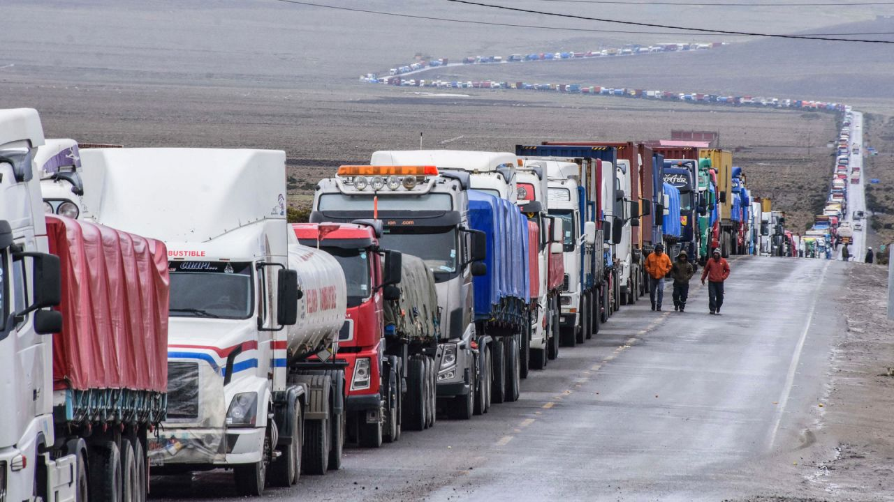

NOTICIAS DESTACADAS
Noticia 1

Guillermo Schavelzon: Secretos de un agente literario
Editor de larga trayectoria, hoy representa a los principales escritores argentinos. Memorias, algoritmos y el libro en tiempos digitales.
Noticia 2
Perón y el origen del Festival de Cine de Mar del Plata
El encuentro se celebrara del 3 al 13 de noviembre en la costa marplatense. Las estrellas que lo visitaron, desde Pasolini a Catherine Deneuve.
Noticia 3

"Maradona" y "Santa Evita" nominadas a los Premios Cóndor de Plata
Por primera vez la Asociación de Cronistas Cinematográficos de Argentina nominó a las producciones audiovisuales en formato de serie, que se distinguirán con el codiciado premio.
Noticia 4
Empresas con costos de logística a toda velocidad
La inflación altera las cuentas de la industria argentina en lo que a transporte se refiere. La búsqueda de alternativas.
Noticia 5
Sin reservas, pero con mil y un dólares
La certeza del atraso cambiario y la negativa a devaluar obliga al Gobierno a hacer parches para detener la sangría de dólares.
Noticia 6
La economía argentina, en plena turbulencia
La economía argentina debe afrontar un contexto de inflación, recesión, además del alza de los precios de commodities y energía.
Noticia 7

Polémica en familia: hermanos en la política
No solo las hermanas Losada comparten vida en la actividad pública. También hay otros casos célebres actuales e históricos.
Noticia 8
VIDEO: Gabriela Cerruti cruzó un periodista por el escándalo de "Gran Hermano"
La respuesta de la vocera presidencial surgió tras la comparación del revuelo por los dichos de Alfa con la reducción presupuestaria para al área de Niñez, planteada para 2023.